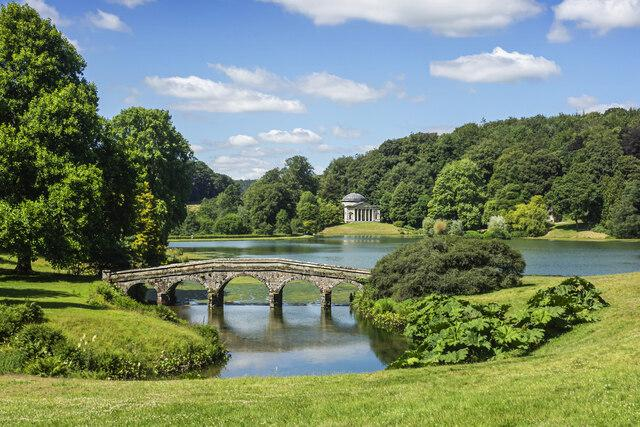
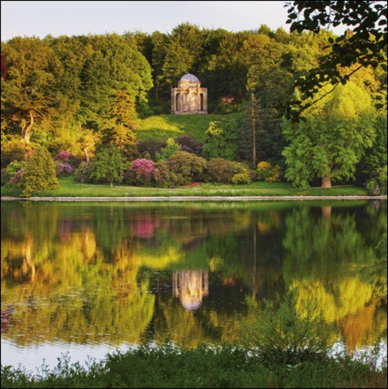
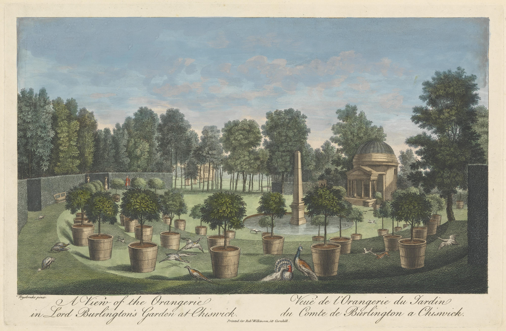
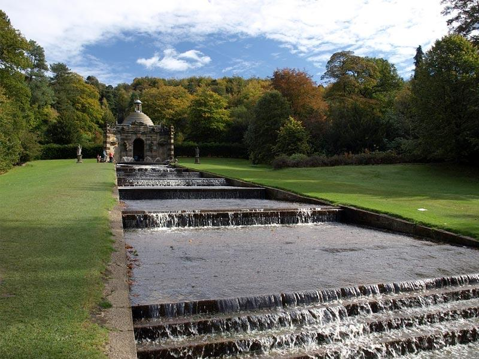
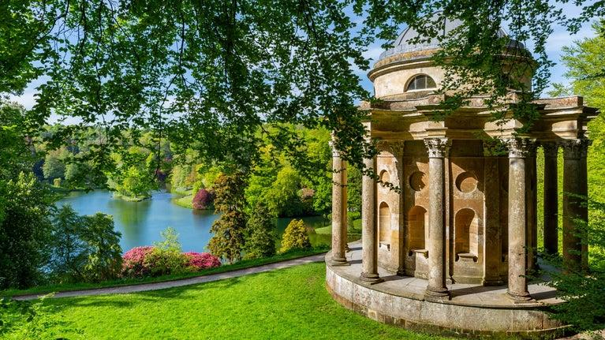
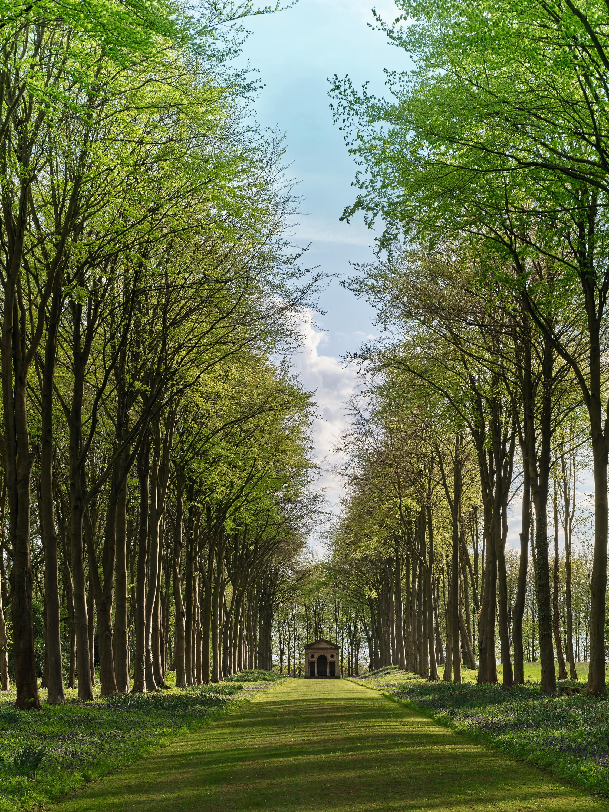
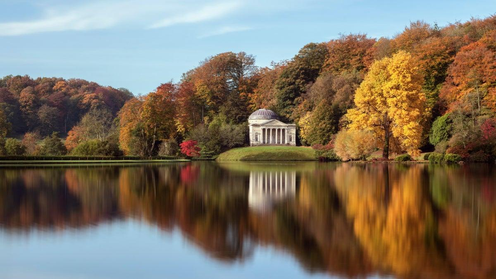
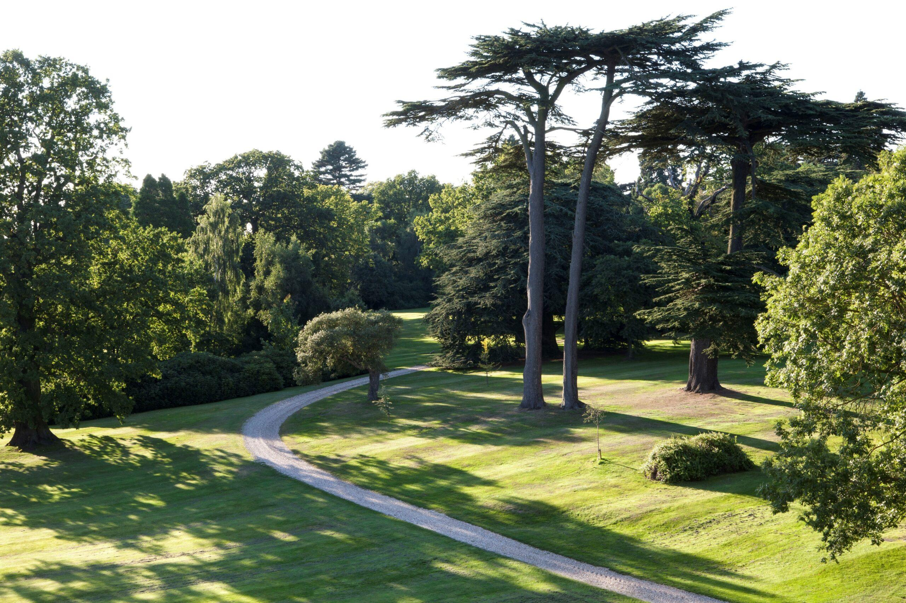
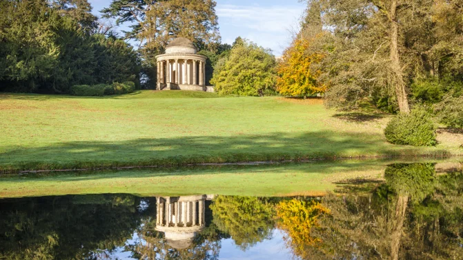

Georgian Garden Design

The Georgian period, traditionally dated from 1714 to 1830, marked a major transformation in British garden and landscape design. The influence of the European Grand Tour brought British landowners, architects, artists, and garden designers into contact with the landscapes, architecture, and classical monuments of France, Italy, and other parts of Europe. Rather than relying primarily on the highly geometric formal gardens of the previous century, Georgian designers increasingly embraced a more naturalistic and picturesque approach. The garden was gradually extended into the wider landscape, creating large parks that appeared less formally constructed while still being carefully designed. The ideal landscape became one of Classical Arcadia—a romantic vision of an ancient pastoral world where architecture, trees, water, and open countryside appeared to exist in harmony. This new approach did not mean that design disappeared. Instead, formality was often hidden within the landscape. Carefully positioned lakes, woodland, viewpoints, roads, buildings, and planting created a sequence of experiences for people walking or travelling through the estate. The Georgian landscape therefore became a place for recreation, discovery, social activity, and contemplation.
Classical Arcadia

Informality Turned Classical Classical Arcadia was one of the central ideals of Georgian landscape design. It was inspired by the idea of an idealized ancient landscape—a peaceful pastoral world associated with classical Greece and Rome. The Georgian garden moved away from the rigid geometry of the Stuart period. Straight avenues, intricate parterres, and heavily clipped hedges became less dominant, while sweeping lawns, irregular groups of trees, winding paths, and natural-looking lakes became increasingly important. Although these landscapes appeared informal, they were often highly controlled. Trees might be planted in carefully calculated groups to frame a view. Hills could be shaped to conceal buildings or reveal them dramatically. Lakes could be created where none naturally existed. The objective was to create a landscape that appeared naturally beautiful, even when considerable planning had taken place behind the scenes. Important characteristics included: * Sweeping lawns * Informal tree groupings * Curving paths and roads * Natural-looking lakes * Long-distance views * Classical buildings and monuments * Carefully framed vistas * A romantic connection to the countryside The result was a landscape that combined nature with classical ideals, creating an English interpretation of an imagined Arcadian countryside.
Shrubberies

Exotic Plants and the Expanding Plant Collection The Georgian period saw an increasing enthusiasm for botanical exploration and exotic plants. As exploration and international trade expanded, gardeners gained access to species from North America, Asia, the Mediterranean, and other parts of the world. Wealthy landowners and horticultural enthusiasts competed to acquire unusual and attractive plants. This enthusiasm led to the development of shrubberies, areas planted primarily with shrubs and ornamental woody plants. Shrubberies provided a transition between the formal garden near the house and the larger informal parkland beyond. They could also create secluded spaces for walking and contemplation. Plant collections might include newly introduced species that were valued for: * Unusual foliage * Flowers * Autumn colour * Evergreen structure * Fragrance * Exotic appearance * Botanical rarity The arrival of exotic species expanded the gardener's palette dramatically. Shrubberies therefore became both ornamental spaces and living botanical collections, reflecting the Georgian fascination with exploration, science, horticulture, and the natural world.
Cascades

Depth, Movement, and Drama Water continued to play an important role in Georgian landscape design, but its treatment became more naturalistic and picturesque. Cascades were created where water flowed down a series of steps, slopes, rocks, or constructed channels. They introduced movement and sound into the landscape while creating a strong visual focal point. Unlike the highly controlled fountains of earlier formal gardens, cascades could be designed to appear more natural. The movement of water helped create a sense of depth and drama. A cascade might lead the eye from a higher part of the landscape down toward a lake or valley. The sound of moving water also added another sensory dimension to the garden. Cascades could therefore provide: * Movement * Sound * Reflection * Vertical interest * A sense of depth * Visual drama * Connections between different levels of the landscape They demonstrated how Georgian designers could take a natural element—water—and manipulate it to create a landscape that appeared both beautifully natural and carefully composed.
Grottos

Follies, Social Spaces, and Romantic Discovery The Georgian landscape introduced an increasing variety of follies and ornamental structures. A grotto was a constructed or partially natural-looking cave-like feature, often decorated with stone, shells, minerals, mosaics, or water features. It provided an element of mystery and surprise within the landscape. Grottos were part of a broader fascination with the picturesque and the romantic. They offered visitors something unexpected to discover while walking through the park. Other ornamental buildings and follies could include: * Temples * Ruins * Bridges * Towers * Hermitages * Rustic shelters * Viewing buildings * Garden pavilions These structures were not necessarily intended to serve practical purposes. Their primary function was often to create interest, atmosphere, and visual drama. Some could also provide practical social spaces for visitors, including areas for resting, refreshments, conversation, and enjoying views of the landscape. A folly could be positioned at the end of a vista or partially hidden among trees so that it was revealed gradually during a walk. The Georgian garden thus became a landscape of discovery, where every turn could reveal another architectural feature or scenic viewpoint.
Shelterbelts

Protection, Privacy, and Landscape Structure As Georgian estates expanded into large open parks, shelterbelts became important landscape features. A shelterbelt is a group or belt of trees and shrubs planted to provide protection from wind, exposure, and weather. In addition to their practical function, shelterbelts could be used to define different parts of the estate and control what visitors could see. Trees could screen: * Roads * Farm buildings * Service areas * Estate boundaries * Neighbouring properties * Less attractive views At the same time, carefully positioned belts of trees could frame important views and direct attention toward desirable features such as the country house, lake, temple, or distant countryside. This gave shelterbelts both a practical and aesthetic function. They helped create privacy and comfort while also allowing the designer to control the composition of the wider landscape.
Lakes

Recreation, Reflection, and the Creation of Landscape Large ornamental lakes became one of the defining features of the Georgian landscape park. Many estate lakes were created or significantly modified rather than being entirely natural. Dams, embankments, streams, and carefully engineered waterways could transform existing terrain into attractive bodies of water. The lake served several purposes. It could provide: * A beautiful reflective surface * A focal point within the landscape * Recreation and leisure opportunities * Habitat for wildlife * A sense of scale * A dramatic foreground for the country house * Opportunities for boating and fishing Reflection was particularly important. The surface of a lake could mirror trees, buildings, bridges, clouds, and surrounding hills, effectively doubling the visual impact of the landscape. The lake also created a sense of spaciousness. A carefully positioned body of water could make a relatively modest landscape appear much larger. Water therefore became an essential component of the Georgian picturesque landscape.
Circuits

Walks That Tour the Park The concept of a circuit became particularly important in Georgian landscape design. Instead of designing the garden primarily to be viewed from one fixed location, designers created routes that encouraged visitors to move through the landscape. A circuit might take visitors past a series of carefully planned experiences: House → Lawn → Woodland → Lake → Bridge → Folly → Viewpoint → Return Each part of the route offered something different. The path might reveal a building from one angle and then conceal it behind trees before presenting another view. A lake might first appear as a small glimpse between trees before opening into a much larger panorama. This technique created a sense of movement, anticipation, surprise, and discovery. Circuits also allowed visitors to experience the landscape from different perspectives and appreciate the changing relationships between architecture, vegetation, water, and distant views. The Georgian garden was therefore not simply a landscape to look at—it was a landscape designed to be experienced while moving through it.
The Character of the Georgian Garden

The Georgian period represented a major shift from the rigid formality of earlier English gardens toward the naturalistic landscape park. Its major characteristics included: Classical Arcadia — creating an idealized pastoral landscape inspired by classical ideas. Shrubberies— introducing exotic and newly collected plants into ornamental spaces. Cascades — using moving water to create depth, sound, and drama. Grottos and follies— introducing mystery, architecture, and social spaces throughout the landscape. Shelterbelts— providing protection and privacy while framing views. Lakes— creating reflections, recreation, wildlife habitat, and dramatic vistas. Circuits— encouraging visitors to explore the entire landscape through carefully designed routes. The Georgian garden was ultimately about the art of making the landscape appear natural. Unlike the Stuart garden, where human control was proudly displayed through straight avenues, parterres, clipped hedges, and topiary, Georgian designers often sought to hide the hand of the designer. The most successful landscape could appear as though it had always existed naturally. Yet behind this apparent informality was careful planning. Trees were strategically planted, lakes were engineered, paths were positioned to reveal views, and buildings were placed to create moments of surprise. The Georgian landscape therefore represented a fascinating balance between nature and design, informality and structure, science and art. It transformed the English garden from a series of formal compartments into a vast, immersive landscape**—one that could be explored on foot, horseback, or carriage and experienced as a sequence of changing views. The garden was no longer simply an ornamental space beside the house. The entire countryside became the garden.